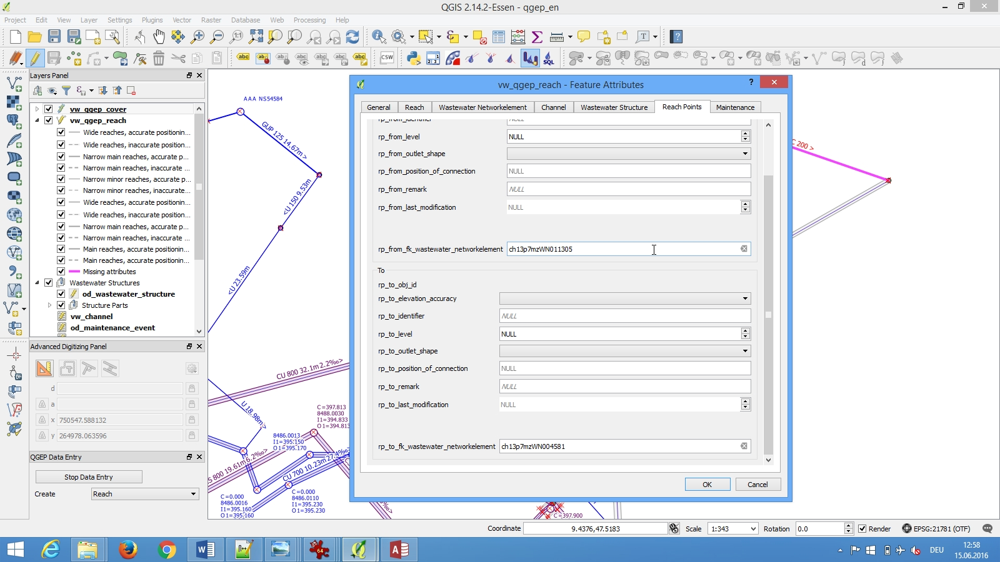

1.3.1. Editing of existing data¶
This represents a guide on how to edit existing data in QGEP.
1.3.1.1. Demo project¶
- Make sure you have imported the demo project with pgAdminIII (see the Database initialization chapter)
- Open the demoproject by going to the main menu and press Project –> Open or by pressing
CTRL+Oat the same time.

- Login to the database

- You should now have the demoproject loaded

- The project consists of different layers. Depending on your task what to edit or add you choose the layer.
1.3.1.2. Layers¶
- QGEP has different predefined layers. For explanations, see the Layer explanation chapter.
1.3.1.3. Changing attributes of point elements (manholes / special structures)¶
- To change an attribute you first need to select the vw_qgep_wastewater_structure layer.
- Switch to the edit mode or start the QGEP Wizard and click on Start Data Entry.
- Then click on the Identify features button and choose the element you want to edit by double-clicking.

- The vw_qgep_wastewater_structure form will open.

- On the first tab you can change the most common attributes
- To change attributes of related tables (e.g. cover) you need to select the correspondent tab. Depending on the kind of wastewater structure you can edit additional attributes in the respective tab (special structure, manhole).
- The covers tab allows you to add additional covers.
Attention
It is not recommended to add a second cover in this form, because you can not define the geometry of the new cover. See the Adding-additional-covers-and-nodes-to-an-existing-wastewater-structure chapter above.
- In Structure parts tab you can add further parts such as access aids, backflow prevention, dryweather flume etc.

- In Wastewater nodes tab you can edit or add all attributes of this class or add a second element.
To add a second wastewater node in this part is not recommended, because you can not define the geometry of the new point.
Attention
It is not recommended to add a second wastewater node in this form, because you can not define the geometry of the new node. See the Adding-additional-covers-and-nodes-to-an-existing-wastewater-structure chapter above.
1.3.1.4. Changing attributes of linear elements (channels)¶
- To change an attribute you first need to select the vw_qgep_reach
- Switch to the edit mode.
- Then click on the Idendify features button and choose the element you want to edit by double-clicking a reach.
- The vw_qgep_reach form will open.

- On the first tab you can change the most common attributes.
- To change attributes of related tables (e.g. reach points) select the correspondent tab.

1.3.1.5. Change reach direction¶
Note
The definition in VSA-DSS is, that reaches have to be defined in the flow direction (the start node is where the water comes from, the end node is where the water flows).
QGEP has a tool to change the reach direction. With this tool you can change all selected reaches at once. Do not use the Reverse line button of QGIS, because this button do not change the reach points and there connection to wastewater network elements.
- To start you have to select all reaches that you want to change. There is no need to select the vw_qgep_reach layer or to set this layer to the edit mode.
- Open the Processing Toolbox

- Double click the Change reach direction tool

- In the tool window you have to choose the vw_qgep_reach - Layer and then click on Run
- If you zoom in or out, you see, that the slope-arrow and the slope has changed. The reach points level have not changed.
- Refresh network topology.
- You can save now the change.
1.3.1.6. Snap reach geometry¶
This tool snaps reaches graphically to the wastewater network element they are connected to. So they are not only logically, but also graphically connected.
- To start you have to select all reaches that you want to snap. There is no need to select the vw_qgep_reach layer or to set this layer to the edit mode.
- Open the Processing Toolbox
- Double click the Snap reach geometry tool
- In the tool window you have to choose the vw_qgep_reach - layer and the vw_wastewater_node - layer, then click on Run
- If you zoom in or out, you see the changes.
- If the result is not, what you expect, try with a greater snapping distance
If there are connections from reach to reach, the reach point moves at right angles to the other reach. If there is no way to do a right angle, it moves to the next end point of the reach.
Attention
If there is snapping from reach to reach, you will get not the expected result, if the first reach snaps to a second reach, and afterwards this second reach snaps to a node or a third reach, so there is no more graphical connection between reach 1 and reach 2.
1.3.1.7. Working with codes of valuelist¶
- The values of fields with valuelist are stored in the database with codes.
Note
The codes are unique, also if there is the same text in different valuelists. E.g. the code for “rain_wastewater” in the vl_channel_usage_current and in the vl_channel_usage_planned is different.
- In a qgep project with correct configuration you see in the table view or the form view the values in your language and not the codes.
- But if you want to define a selection by expression or if you want to define a rule-based symbology for your layer, you have to know the codes or you use the following expression: represent_value(“field”)
Examples for using represent_value
- Search all primary wastewater facility reaches (function_hierarchic starts with pwwf)

- Search all reaches, that have not the same usage_planned as usage_current

Note
The expression “ch_usage_current” <> “ch_usage planned” does not work because of the unique codes!
Note
In the demo-project is no use of represent_value for rule-based symbols, because the rules will otherwise only work for one language.
1.3.1.8. An other way to choose an object¶
- With the Identify feature tool activated, right clicking an element outputs a selection of all existing objects at this place.

- You can select then the object you want. This will get you to the correspondent form to see the details.
1.3.1.9. Adding additional covers and nodes to an existing wastewater structure¶
Note
The following description is for an additional cover. It works similar for additional wastewater nodes.
- Be sure to have the relation between vw_cover (field fk_wastewater_structure) and vw_qgep_wastewater_structure (field obj_id) in your project properties / relations.
- Define in layer vw_cover / Properties / Attribute Forms the field fk_wastewater_structure as value relation

- Start editing vw_cover and add the new cover
- In the form you find behind the field fk_wastewater_structure a button to connect the new cover to an existing wastewater structure
- After clicking this button, you get blue hint in the qgis-window. You can move the vw_cover - form-window and click on the wastewater_structure, that will be associated to the cover.

1.3.1.10. Adding a wastewater node to an existing reach¶
In some cases, you need to add a wastewater node between two or more reaches, although there is no manhole at this place.
Note
This cases are mainly in pwwf_channels (primary wastewater facilities) if there is e.g. a change of slope or a change of the material or if there is a connection of two channels without manhole (in German: Blindanschluss).
In the datamodel, you can connect a node between reaches to a channel (because also a channel is a wastewater structure). There is in the moment a discussion, if it is necessary or optional or even forbiden to define a connection to a wastewater structure.
In QGEP, there is in the moment no tool, that helps you to connect a wastewater node to a channel. So you just connect the reach points to the node.
Note
If you really want to connect the node to a channel, then type the obj_id of the channel manualy in the fk_wasterwater_structure field of the node.
1.3.1.11. Multiedit¶
If you want to edit attributes for multiple objects of the same class you can use the multiedit Tool of QGIS.
1.3.1.12. Saving changes¶
- Click Save and then deactivate the edit mode or click on Stop data entry if you have worked with the QGEP Data Entry wizard.
In the vw_qgep_wastewater_structure form, you can change the subclass of the wastewater structure (e.g. from manhole to special structure or to infiltration installation). The old subclass-record will be deleted and you must enter those attributes, that are subclass specific. But all connections (they are defined to the class wastewater_structure and not to the subclass) or the obj_id or the identifier will not change.
Note
You can not change a point - wastewater structure (e.g. manhole) to a line wastewater structure (channel) or vice versa.
1.3.1.13. Split a reach (channel) into different reaches¶
This is a quite complex function and not jet implemented in QGEP. There exists a QGIS-Tool to split objects, but if you use this tool with vw_qgep_reach - layer, you will get a database error, because the obj_id if the split (= doublicated) records are no more unique.
Temporary solution: Change the existing reach and draw the second reach manually. Control the connections.
There will be later a tool in QGEP to split reaches. The user has to decide, if splitting concerns only class reach or also the class channel, if there a new wastewater node shall be added and connected. The tool shall be able to calculate the new reachpoint - levels and should change the existing network-element-connections if nesseccary.
Link to the Homepage of the Swiss Waste Water Association - Datamodel VSA-DSS: